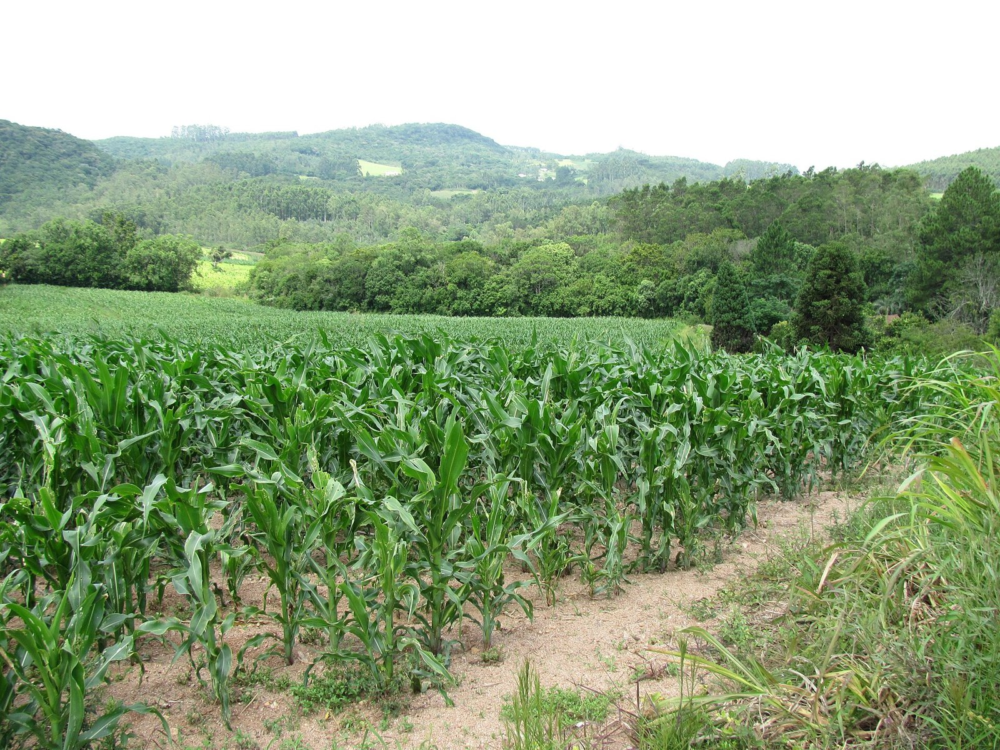
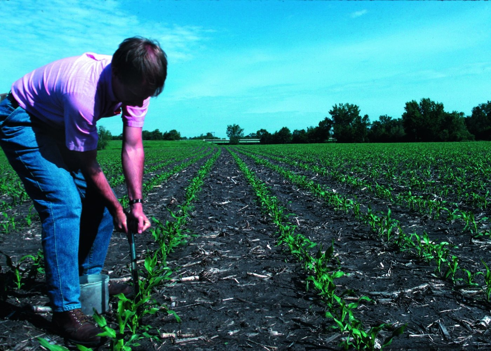
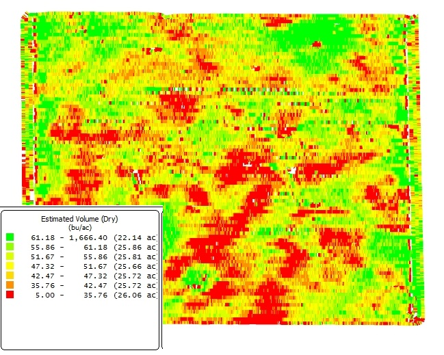
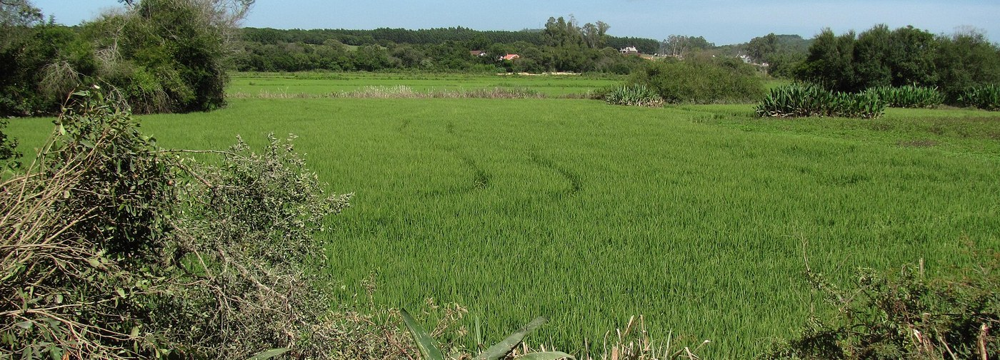
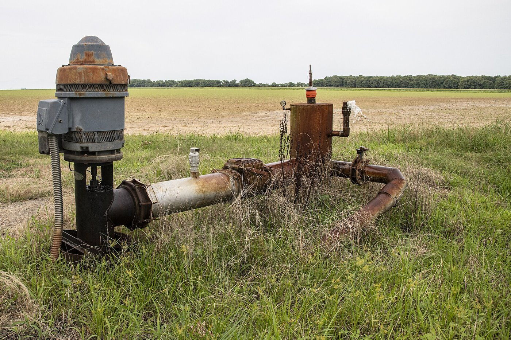

Do manejo
ao custo

 produzirnaobasta.com.br
produzirnaobasta.com.brQuanto custa produzir uma saca, um litro ou um quilo na sua propriedade?
Toda prática vira custo.
Todo custo tem uma prática.
O que se faz, o que consome
| O que se faz | O que consome |
|---|---|
| Plantio do milho | semente, adubo, trator e plantadeira, diesel, horas de quem opera |
| Controle de lagarta | inseticida, pulverizador, diesel, horas de trabalho |
| Ordenha, duas vezes ao dia | energia, produtos de limpeza, ordenhadeira, horas da família |
| Pastagem de inverno | semente de aveia ou azevém, adubo, preparo e plantio |
Primeiro o diagnóstico
- Lavoura: o laudo de solo
- Pecuária: a estrutura do rebanho
- Pomar: o sistema de produção

Quanto se usa, vezes o preço
| adubo no plantio | 350 kg/ha |
| × preço | R$ 3,30/kg |
| por hectare | R$ 1.155 |
| em 10 hectares | R$ 11.550 |
Quando o coeficiente vira mapa
- Uma dose para cada zona de manejo
- O laudo vira grade de amostragem
- Custo do adubo = soma de dose × área × preço, zona a zona

O inventário do que a atividade consome
semente, adubo, calcário, defensivo, ração, remédio
preparo, plantio, tratos, colheita: diesel, manutenção
permanente, temporário, frete, secagem, assistência
desgaste, arrendamento, impostos, seguro, energia
Percorra o ano mês a mês: o que acontece, e o que cada momento consome.
Variável ou fixo?
Variável
Muda com a área ou o rebanho: semente, adubo, defensivo, diesel das operações, ração, vacina.
Fixo
Existe mesmo sem produzir: desgaste de máquinas, arrendamento fixo, mão de obra permanente, ITR.
Direto ou indireto?
Direto
É de uma atividade só: o adubo do milho é do milho.
Indireto
É de várias: o salário de quem cuida da lavoura e do gado. Precisa de rateio.
Sai do caixa, ou não sai?
Explícito
Aparece no extrato: semente, salário, diesel, frete.
Implícito
Não sai do caixa, mas é real: o desgaste, a terra própria, o trabalho da família.
Cada prática, classificada
| Concentrado e suplementação | variável · direto |
| Sanidade e reprodução | variável · direto |
| Mão de obra da ordenha | fixo · direto |
| Manutenção da sala de ordenha | fixo · indireto |
| Desgaste de instalações e equipamentos | fixo · indireto |

Cada prática reaparece na planilha

| Irrigação por inundação | diesel e energia das bombas, água, canais, taipas |
| Adubação conforme o laudo | adubo de base e de cobertura, ureia, aplicação |
| Controle fitossanitário | agroquímicos, aviação agrícola |
| Colheita mecanizada | combustível, manutenção, transporte, secagem, frete |
Três em cada quatro reais são variáveis
Total: R$ 15.770 por hectare. Uma atividade intensiva em insumo e operação.
Energia da irrigação: fixa ou variável?
- Consumo (kWh): cresce com as horas de bomba. Variável.
- Demanda contratada: vence com a bomba desligada. Fixa.

R$ 90 de custo, e o preço?
Só o custo variável já dava R$ 67,40 por saca, acima do preço. Na safra 2025/26, orizicultores reduziram a área.
Três lições
- O manejo gera a lista: nenhuma linha cai do céu
- A classificação mostra a estrutura: o que muda com a escala e o que fica
- Itens ambíguos existem: o critério declarado vale mais que o rótulo
Referências
IRGA. Custo de produção do arroz irrigado, safra 2025/26. Porto Alegre: Instituto Rio Grandense do Arroz, jun. 2026.
KAY, R. D.; EDWARDS, W. M.; DUFFY, P. A. Gestão de propriedades rurais. 7. ed. Porto Alegre: AMGH, 2014.
MATSUNAGA, M. et al. Metodologia de custo de produção utilizada pelo IEA. Agricultura em São Paulo, v. 23, n. 1, p. 123-139, 1976. Base do Campo Futuro (CNA).
OLIVEIRA, R. M. Gestão da Propriedade Rural, módulo 4: quanto custa produzir. Produzir Não Basta, 2026. produzirnaobasta.com.br/produtor
Fotos: milho, arroz e trator, Paulo RS Menezes (CC BY-SA 3.0 BR) · solo e motobomba, USDA-NRCS (domínio público) · mapa de produtividade, ISUcyGrain (CC BY-SA 3.0) · ordenha, Andrevruas (CC BY 3.0).
Material elaborado pelo Prof. Róberson Macedo de Oliveira (Colégio Politécnico da UFSM), com apoio de IA (Claude, Anthropic) na organização didática e na diagramação; conteúdo, seleção e decisões de ensino são do docente.